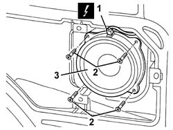
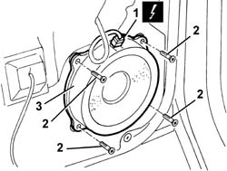

5570T96 rear side speaker - r r
- Path
- Procedures > 55 ELECTRICAL EQUIPMENT > 5570 ACCESSORIES > 5570T car radio and car telephone > 5570T96 rear side speaker - r r
- Kind
- repair procedure (removal / refitting; the operation number is the code)
- Applies to
- all engines; all production periods
- Interactive page
- https://sloeber94.github.io/elrnDB-a147/en/#/3025603
Applies to: all engines; all production periods; only with equipment: 3 porte
 Removing
Removing
 Refitting
RefittingWork with caution
7040L40 front compartment scuff strip - r r
7050A22 rear seat cushion - r+r
1. Disconnect the electrical connections.
 | Name | Connector |
|---|---|---|
1 | Left rear speaker |
| Name | Connector |
|---|---|---|
1 | Right rear speaker |
2. Unscrew the bolts
3. Recover the speaker.

Applies to: all engines; all production periods; only with equipment: 3 porte
Refitting
RemovingCheck that the speaker is not damaged.
Position the speaker.
Tighten the screws.
Connect the electrical connection
Check the operation of the speaker.
Applies to: all engines; all production periods; only with equipment: 5 porte
Removing
RefittingWork with caution
7010M10 rear side door electrically operated window switch r r
7010C44 interior handle panel - r r
7010E11 lh or rh rear door inner panel - r+r with fouling parts removed
1. Disconnect the electrical connections.
| Name | Connector |
|---|---|---|
1 | Left rear speaker |
| Name | Connector |
|---|---|---|
1 | Right rear speaker |
2. Unscrew the bolts
3. Recover the speaker.

Applies to: all engines; all production periods; only with equipment: 5 porte
Refitting
RemovingCheck that the speaker is not damaged.
Position the speaker.
Tighten the screws.
Connect the electrical connection
Check the operation of the speaker.
7010E11 lh or rh rear door inner panel - r+r with fouling parts removed
7010C44 interior handle panel - r r
7010M10 rear side door electrically operated window switch r r
Topics linked from this page (8)
- 7010C44 interior handle panel - r r
- 7010E11 lh or rh rear door inner panel - r+r with fouling parts removed
- 7010M10 rear side door electrically operated window switch r r
- 7040H50 rear panel - r r
- 7040L40 front compartment scuff strip - r r
- 7050A22 rear seat cushion - r+r
- P30 Left rear speaker
- P31 Right rear speaker
Topics that link to this page (20)
- N11 RADIO CANNOT BE HEARD, IS HARD TO HEAR
- 5505B21 rear door wiring - r r
- 7010A04 rear side door water guard protection - r r or arrange with door panel removed
- 7010A05 rear side door water guard protection-r r or arrange
- 7010A28 rear side door opening limiter-r r
- 7010C51 rear side door inner catch return device - r+r for repair or replacement
- 7010C64 handle link yo lock - r r
- 7010C65 handle link to lock - r r
- 7010D12 fixed window glass element - r r
- 7010D14 rear side door descending window glass - r r with door panel (and mount frame) removed
- 7010D15 rear side door descending window glass-r r
- 7010D22 rear side door descending window glass guide (one) - r r with door panel (and support frame) removed
- 7010D23 rear side door descending window glass guide one-r r
- 7010E93 partition on rear door, lh or rh - r r with door panel removed
- 7010M20 repeair side door electrically operated window motor - r r with door panel-mount frame removed
- 7010M21 rear side door electrically-operated window-r r
- 7010N20 rear side door lock motor/catch assembly - r r with door panel and support frame removed
- 7010N21 rear side door lock motor-lock assembly r r
- 7095B94 rear speaker one - r r
- 7205E38 Stripping REAR SIDE DOOR